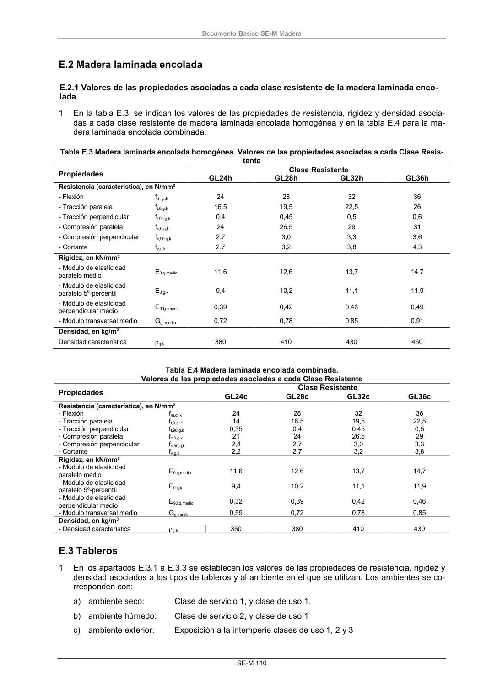

DB-SE-M Madera · edición 2019-12-20 · capa oficial
Documento DB-SE-M-oficial · SHA-256 del PDF 26b5819839ebfda78b0b119c5e76a0a37773b0d763c05688541870075df93718
Copia fiel del PDF fuente · Fuente oficial
Ficha de la disposición en la fuente oficial
Formatos: JSON del segmento · Markdown
E.3 Tableros 1 En los apartados E.3.1 a E.3.3 se establecen los valores de las propiedades de resistencia, rigidez y densidad asociados a los tipos de tableros y al ambiente en el que se utilizan. Los ambientes se co- rresponden con: a) ambiente seco: Clase de servicio 1, y clase de uso 1. b) ambiente húmedo: Clase de servicio 2, y clase de uso 1 c) ambiente exterior: Exposición a la intemperie clases de uso 1, 2 y 3 DocumentoBásico SE-M Madera SE-M 111 2 En las tablas siguientes (véase UNE-EN 789:2006): a) cortante en el grueso es equivalente a cortante de cizalladura; b) cortante en el plano es equivalente a cortante de rodadura.
